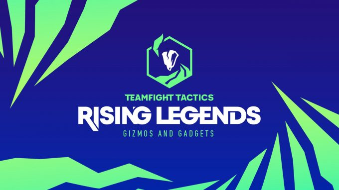
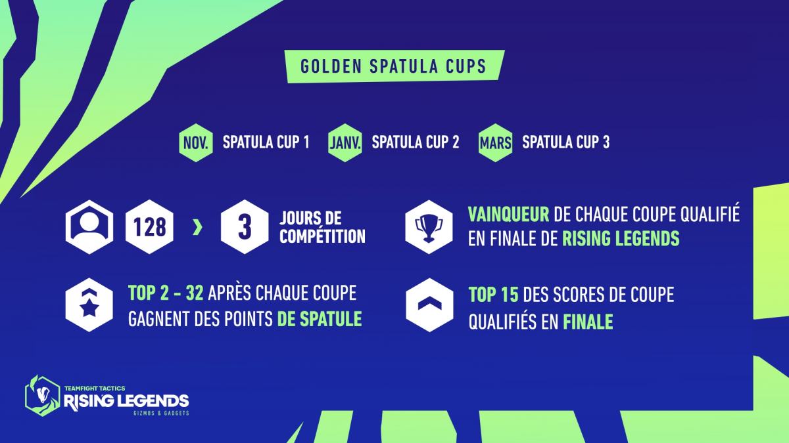
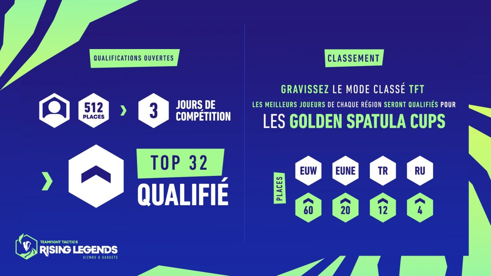
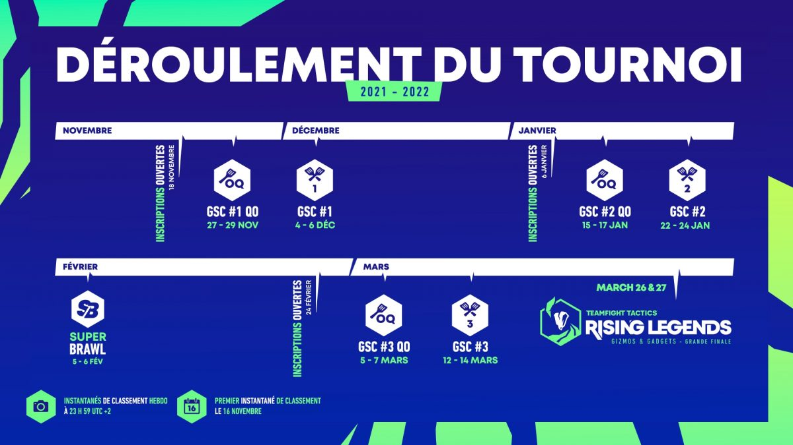

La scène E-sport de TFT
Un circuit compétitif en EMOA (Europe, Moyen-Orient, Afrique) voit le jour sur TFT. Et il va être lancé avec Gadgets en folie, le set 6. Il inclut trois tournois, avec des qualifications ouvertes ou via le ladder, et une grande finale pour déterminer qui représentera la région aux Worlds.
Concrètement, le circuit se déroule en deux étapes. Trois tournois régionaux intitulés Golden Spatula sont organisés. Ils se déroulent chacun sur trois jours. Le premier se déroulant du 4 au 6 décembre, et les deux autres plus tard en 2022. Pour accéder à un Golden Spatula, deux choix s’offrent à vous : faire partie du top ladder régional (top 60 pour l’EUW), ou survivre aux qualifications ouvertes. Tout le monde peut s’inscrire, pour peu qu’il soit au minimum classé Diamant II.
A l’issue des trois Golden Spatula, les 3 vainqueurs de tournois et les 15 joueurs avec les meilleurs scores seront qualifiés pour la finale Rising Legends. Ils seront accompagnés par les 12 meilleurs joueurs du ladder. 2 joueurs issus du Superbrawl, un petit tournoi en 2v2v2v2 où les meilleurs joueurs se retrouveront en février, complèteront le plateau. Enfin, pour la finale régionale, le format reste identique à celui utilisé jusqu’à aujourd’hui. Le top 4 de l’événement aura accès aux championnats du monde.
Un programme jusqu’en mars, pour tout le set 6
Chaque étape de qualification a le droit a son propre cashprize. A chaque tournoi Golden Spatula, 6 000€ sont ainsi mis en jeu. Tandis que les joueurs du Rising Legends s’affronteront pour se départager les 20 000€.
Attention néanmoins. Si le classement du ladder compte pour l’inscription, il faut impérativement s’être inscrit au préalable sur le site officiel du tournoi pour participer. Ce sera possible dès le 3 novembre. La première édition des Golden Spatula est prévue entre le 4 et 6 décembre, et sa qualification ouverte du 27 au 29 novembre. La période d’inscription débutera quant à elle le 18 novembre.